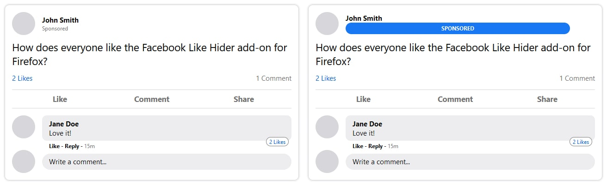

Currently, Facebook does not clearly label sponsored (ad) content that appears in your news feed from the regular content. A small label is placed where the post date is usually displayed. This label is small and there are no other differences in the appearance of these sponsored posts.
The Facebook Like Hider add-on changes that.
Once the new "Better indicators on sponsored posts" setting in the add-on options is enabled, the label for sponsored posts will be modified to include a big blue bar at the top of sponsored posts.
To access your add-on settings, press the menu button (three lines) in the top-right corner of Firefox. Select Add-ons and click the Facebook Like Hider add-on. Select Options from the tabs listed under the add-on name.
Alternatively, as of this update (version 3.0), a Facebook Like Hider icon should appear on the right side of your Firefox address bar when you are on the Facebook website. Clicking that button will open the add-on options.